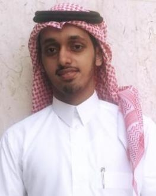

|

personal information
Saudi Arabia-Riyadh
Name : Badr Salem Bin Homeed
Major : Software Engineering
Email : badrsalem55@gmail.com
Mobile : 0531090857
Social


|
introduction
Hello I am Badr, a Yemeni Nationality I was born in Jeddah in 1996, a fresh graduate from King Saud University in 2019. College of Computer Science and Information the major is Software Engineering. I like development and programming languages. I always have the motivation to learn and gain new skills and experiences. I look forward to having a chance to be a member in Software development team or a member in the IT department.
Skills
- Web development (HTML5, CSS, JavaScript, and PHP)
- Java Programming language
- C# Programming language
- C++ Programming language
- SQL DataBase
Work Experience
- I have been training at World Medical Service for
information technology .CO.LTD “WMS” for two months , I learned with them C# language and development
Windows Desktop Applications , ASP.NET and Show how you can develop Mobile Applications with
Xamarin. in (2019)
- During my undergraduate period, I worked in the Preparing gifts and delivered them through a shop on the Instagram platform. in (2017 to 2019)
- During my high school years I worked on summer vacations, worked as a salesman in a car accessories shop and worked as a salesman in a clothing store and men's accessories. in (2013 to 2016)
Education & Qualifications
- Bachelor in Software Engineering from King Saud University. (2019)
- Course Development of ASP.NET web applications from Computer & Skills development
training center in King Saud University. Certified by the General Organization for Technical and Vocational Training . (2019)
- Course C ++ Programming Basics from Computer & Skills development training center in
King Saud University. Certified by the General Organization for Technical and Vocational Training . (2019)
- Online training course in web design by HTML & CSS provided by the Flexcourses platform registered with the Ministry of Commerce and Investment. in (2019)
|